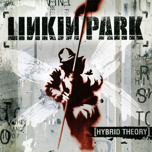
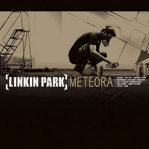
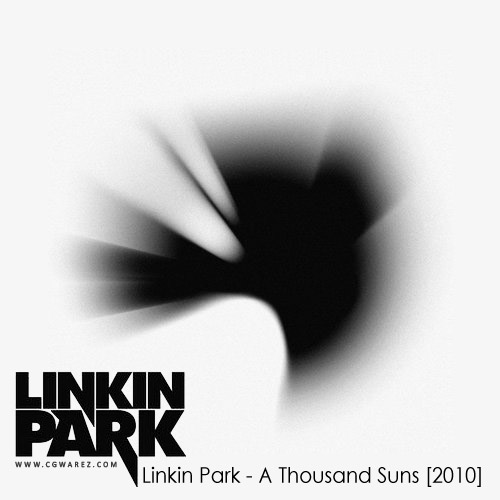
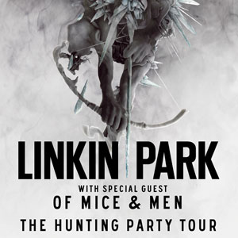
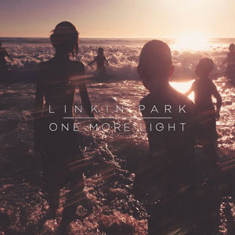

Launching : 2000. 10. 24.
The First Album of Linkin Park.
The album, which represented half a decade's worth of the band's work, was edited by Don Gilmore.

Launching : 2003. 3. 25.
Following the success of Hybrid Theory and Reanimation, Linkin Park spent a significant amount of time touring around the United States.

Launching : 2007. 5. 15.
Linkin Park returned to the recording studios in 2006 to work on new material.
To produce the album, the band chose producer Rick Rubin.

Launching : 2010. 7. 1.
In May 2009, Linkin Park announced they were working on a fourth studio album, which was planned to be released in 2010.
Shinoda told IGN that the new album would be 'genre-busting,' while building off of elements in Minutes to Midnight.

Launching : 2012. 4. 16.
Actually, The Single Album, "Burn it Down" was launched first.
However, There was a leak of whole album titles. So Linkin Park mentioned that should buy official Albums with ignore those leaks.

Launching : 2014. 3. 6.
In an interview with Fuse, Shinoda confirmed that Linkin Park had begun recording their sixth studio album in May 2013.
The band released the first single from their upcoming album, titled, "Guilty All the Same" on March 6, 2014 through Shazam.

Launching : 2017. 5. 19.
Linkin Park began working on new material for a seventh studio album in November 2015.
Chester Bennington commented on the album's direction by stating,
"We’ve got a lot of great material that I hope challenges our fanbase as well as inspires them as much as it has us."